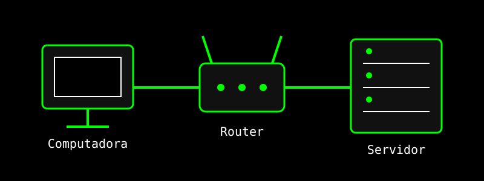

¿Qué es una red?
Una red informática es un conjunto de dispositivos conectados que pueden intercambiar información y compartir recursos.
Elementos principales
- Dispositivos: computadoras, teléfonos e impresoras.
- Medios: cables o conexiones inalámbricas.
- Reglas: protocolos que organizan la comunicación.

El modelo OSI
El modelo OSI es una forma de representar la comunicación entre dispositivos de una red. Está organizado en siete capas y cada una cumple una función diferente.
| Capa | Nombre | Función principal |
|---|---|---|
| 1 | Física | Transmite los datos por cables o señales inalámbricas. |
| 2 | Enlace de datos | Permite la comunicación dentro de una red local. |
| 3 | Red | Busca el camino para enviar los datos a su destino. |
| 4 | Transporte | Controla el envío de datos entre dispositivos. |
| 5 | Sesión | Inicia, mantiene y finaliza la comunicación. |
| 6 | Presentación | Prepara los datos para que puedan interpretarse. |
| 7 | Aplicación | Ofrece servicios de red a los programas del usuario. |
Algunos protocolos relacionados
- IP: permite identificar destinos y enviar paquetes entre redes.
- TCP: busca que los datos lleguen completos y ordenados.
- UDP: envía datos rápidamente sin comprobar cada entrega.
- ICMP: comunica información y errores sobre el funcionamiento de la red.